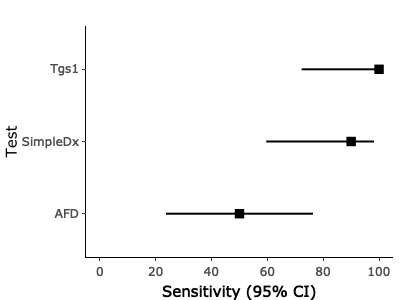

The goal of finddataanalysis is to have a collection of tools that are used for data analysis.
Installation
You can install the development version of finddataanalysis from GitHub with:
# install.packages("devtools")
devtools::install_github("finddx/finddataanalysis")Performance Evaluations
This is a basic example which shows you how to calculate the sensitivity and specificity of a diagnostic test using the automatized function
library(finddataanalysis)
#> Warning: replacing previous import 'ggplot2::last_plot' by 'plotly::last_plot'
#> when loading 'finddataanalysis'
#> Warning: replacing previous import 'plotly::rename' by 'plyr::rename' when
#> loading 'finddataanalysis'
library(DT)
df <- data.frame(Index1 = c(rep("Positive", 20), rep("Negative", 20)), Index2 = c(rep("Positive", 5), rep("Negative", 35)), Index3 = c(rep("Positive", 9), rep("Negative", 31)), Reference = c(rep("Positive", 10), rep("Negative", 30)))Generating All outputs
eval_output <- performance_eval_auto(data_var = df, list_index = c("Index1", "Index2", "Index3"), ref = "Reference", conf.level = 0.95, index_names = c("Tgs1", "AFD", "SimpleDx"), labels = "Test", forest_plot = TRUE, table_output = TRUE, file_name = "MyEvaluationExample")
eval_output$sen_plot 
eval_output$spe_plot
eval_output$table
Generating Forest Plot Outputs
eval_output_only_forest <- performance_eval_auto(data_var = df, list_index = c("Index1", "Index2", "Index3"), ref = "Reference", conf.level = 0.95, index_names = c("Tgs1", "AFD", "SimpleDx"), labels = "Test", forest_plot = TRUE, table_output = FALSE)
eval_output_only_forest$sen_plot
eval_output_only_forest$spe_plot
eval_output_only_forest$table # Should give NULL
#> NULLGenerating a simple data frame output where the table is not formatted, especially considering the confidence intervals. This form is computer friendly.
eval_output_simple_df <- performance_eval_auto(data_var = df, list_index = c("Index1", "Index2", "Index3"), ref = "Reference", conf.level = 0.95, index_names = c("Tgs1", "AFD", "SimpleDx"), labels = "Test", forest_plot = FALSE, table_output = FALSE)
eval_output_simple_df
#> N TP FP FN TN Sensitivity Specificity SensLower SensUpper SpeLower SpeUpper
#> 1 40 10 10 0 20 100 66.67 72.25 100.00 48.78 80.77
#> 2 40 5 0 5 30 50 100.00 23.66 76.34 88.65 100.00
#> 3 40 9 0 1 30 90 100.00 59.58 98.21 88.65 100.00
#> Balanced_Accuracy BAlower BAupper DOR DORUpper DORLower PPV PPVLower PPVUpper
#> 1 83.34 60.52 90.38 Inf Inf NaN 50 29.93 70.07
#> 2 75.00 56.15 88.17 Inf Inf NaN 100 56.55 100.00
#> 3 95.00 74.11 99.10 Inf Inf NaN 100 70.09 100.00
#> NPV NPVLower NPVUpper Accuracy ACCLower ACCUpper Test
#> 1 100.00 83.89 100.00 75.0 59.81 85.81 Tgs1
#> 2 85.71 70.62 93.74 87.5 73.89 94.54 AFD
#> 3 96.77 83.81 99.43 97.5 87.12 99.56 SimpleDxPerformance Evaluation by Groups
You can do the subgroup analysis automatically by defining a group variable (group_var). Please note that, this parameter should not be specified in quotation parks. E.g.: variable instead of “variable”
data(my_dataset)
head(my_dataset)
#> ID Test_Name Result RefTest
#> 1 01STUDID ABC Negative Negative
#> 2 01STUDID DST Negative Negative
#> 3 01STUDID HCG Negative Negative
#> 4 01STUDID LLJK Negative Negative
#> 5 01STUDID ddfs Negative Negative
#> 6 01STUDID Weird Lab Negative Negative
eval_output <- performance_eval_auto(data_var = my_dataset, list_index = "Result", ref = "RefTest", conf.level = 0.95, labels = "Test", forest_plot = FALSE, table_output = TRUE, file_name = "MyEvaluationExample", data_long = TRUE, group_var = Test_Name )